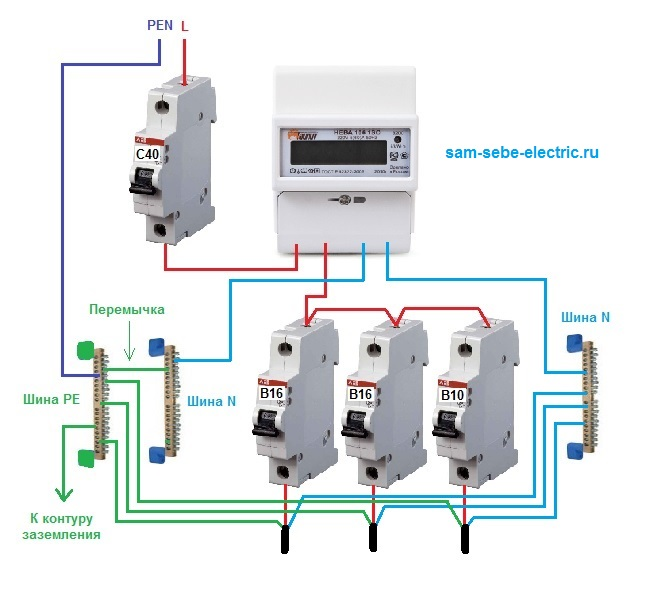
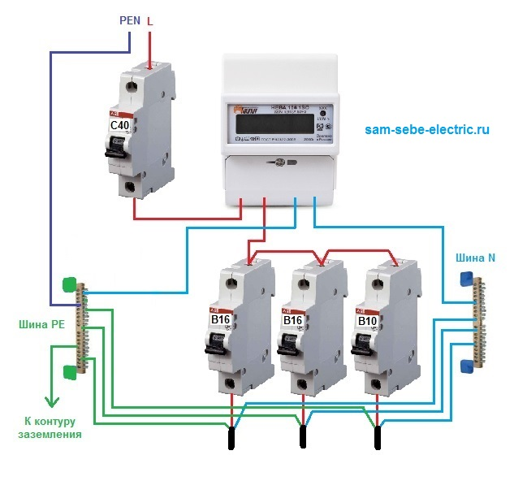
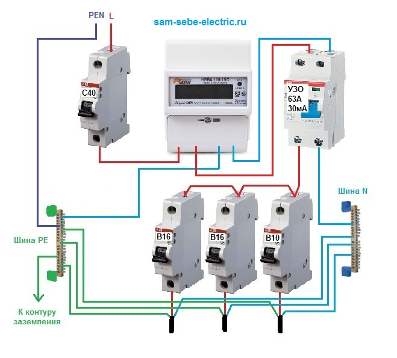
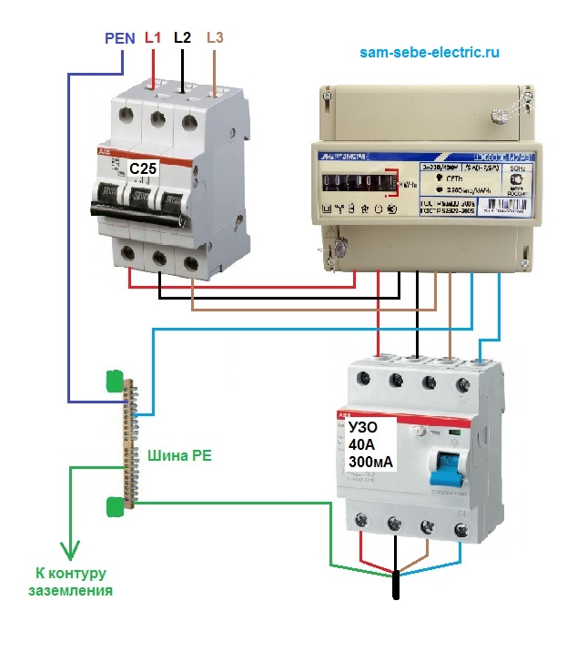
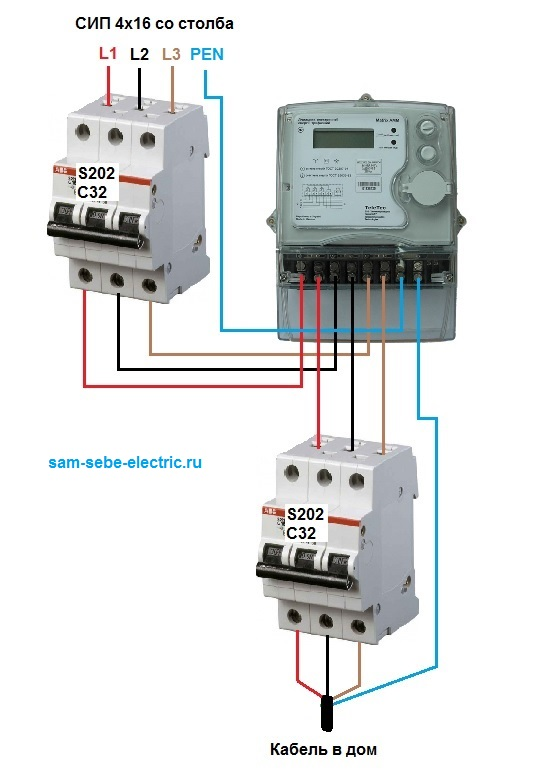
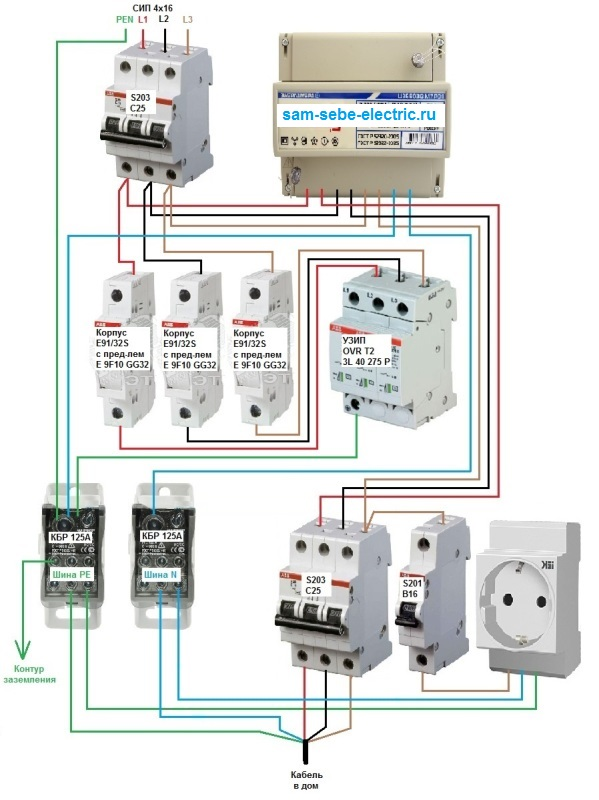

Как разделить входящий PEN проводник на N и PE
Опубликовано: 27 Май 2016
Просмотров: 84265
Мне довольно часто приходится сталкиваться с вопросом как правильно разделить входящий PEN проводник на N и PE. Также эти вопросы уже много раз задавались в комментариях на сайте и я обещал опубликовать материал на эту тему. Хоть не так быстро, но все-таки я свое обещание выполнил ))) Об этом говорит данная статья. Приятного чтения!
Как разделить входящий PEN проводник на N и PE
PEN проводник представляет собой совмещенные в одну жилу нулевой рабочий и нулевой защитный проводники. Если говорить простыми словами, то PEN это объединенные "ноль" и "земля". PEN проводник применяется в старых системах заземления TN-C. По современным требованиям нормативных документов этот проводник нужно разделять на два самостоятельных проводника N (нулевой рабочий) и PE (нулевой защитный) и сделать переход на систему заземления TN-C-S.
Об этом гласит ПУЭ п.7.1.13:
Питание электроприемников должно выполняться от сети 380/220 В с системой заземления TN-S или TN-C-S. При реконструкции жилых и общественных зданий, имеющих напряжение сети 220/127 В или 3 х 220 В, следует предусматривать перевод сети на напряжение 380/220 В с системой заземления TN-S или TN-C-S.
Данный перевод позволяет во всех розетках подключить защитные контакты, таким образом, позволяет заземлить всю домашнюю технику и обезопасить человека от поражения электрическим током.
Сегодня практически везде в частном секторе и во многих домах советской постройки используется старая система заземления TN-C. Поэтому при реконструкции электропроводки нужно делать переход на TN-C-S, т.е. нужно разделить PEN проводник на самостоятельные N и PE.
Где нужно разделять PEN проводник?
На это нам даст ответ ГОСТ Р 50571.1-2009. В п.312.2.1 есть следующие строки:
В электроустановках жилых и общественных зданий, торговых предприятий, медицинских учреждений запрещено применять PEN-проводники. PEN-проводник распределительной сети должен быть разделен на нейтральный и защитный проводники на вводе электроустановки
Все мы живем в жилых же зданиях и согласно данного пункта мы видим, что PEN проводник у нас запрещено применять. Еще в этом пункте написано, что разделение нужно выполнять на вводе электроустановки. В частных домах, коттеджах и дачах это нужно делать в вводных щитах учета, а в многоквартирных домах это нужно делать в ВРУ.
После разделения в вводном щите PEN проводника на N и PE объединять обратно их уже нельзя, т.е. запрещено. Об этом гласит ПУЭ п. 1.7.131.
Когда нулевой рабочий и нулевой защитный проводники разделены, начиная с какой-либо точки электроустановки, не допускается объединять их за этой точкой по ходу распределения энергии. В месте разделения PEN-проводника на нулевой защитный и нулевой рабочий проводники необходимо предусмотреть отдельные зажимы или шины для проводников, соединенные между собой. PEN-проводник питающей линии должен быть подключен к зажиму или шине нулевого защитного -проводника.
Также из этого пункта мы видим, что для разделения нужно приготовить две шины. Одна шина для подключения нулевых рабочих проводников и вторая для подключения нулевых защитных проводников. Еще эти шины должны быть соединены между собой. Это соединение делается перемычкой из кабеля.
Приходящий PEN проводник сначала нужно подключать к шине PE и потом от этой шины делать перемычку на шину N.
Теперь смотрим ПУЭ п 1.7.61:
При применении системы TN рекомендуется выполнять повторное заземление PE- и PEN-проводников на вводе в электроустановки зданий, а также в других доступных местах. Для повторного заземления в первую очередь следует использовать естественные заземлители. Сопротивление заземлителя повторного заземления не нормируется.
В данном пункте мы видим, что приходящий PEN проводник рекомендуется повторно заземлять. То есть возле ВРУ или щита учета необходимо делать контур заземления или можно использовать естественные заземлители. Затем этот контур заземления нужно соединять с шиной PE, к которой уже подключен PEN проводник. В качестве реализации главной заземляющей шины в щитах для частных домов очень хорошо подходят распределительные блоки.
Также в данном пункте написано, что повторное заземление не нормируется, но все-таки стоит делать контур заземления надежным и качественным. По нормам сопротивление изоляции контура заземления не должно превышать 4 Ом. Вы сами без специального прибора этот параметр измерить не сможете.
Это была небольшая теория по разделению PEN проводника на N и PE с ссылками на пункты нормативных документов.
Теперь давайте рассмотрим несколько наглядных схем, на которых показано это разделение. Данные схемы помогут вам лучше понять как это делается.
Ниже представлена схема разделения PEN проводника для однофазной сети. В принципе, если вы прочитали вышеприведенные пункты, то вам должно быть в ней все понятно. Тут PEN проводник подключается к шине PE, затем эта шина повторно заземляется и от нее идет перемычка к шине N.

Если после вводного коммутационного аппарата (автоматического выключателя) у вас сразу идет прибор учета электроэнергии, то использование перемычки и шины N на вводе теряет смысл. Они становятся лишними болтовыми соединениями, где может ослабнуть контакт и ухудшиться качество соединения. Поэтому в таких схемах шину N можно и не ставить.
Посмотрите следующую схему. В ней нет перемычки и шины N.

В следующей схеме после счетчика установлено вводное УЗО. Может кому-нибудь эта схема пригодится. На номиналы автоматических выключателей и параметры УЗО сильно не смотрите, так как у вас они могут быть совершенно другими.

Если ваш дом подключен к 3-х фазной сети, то в ней суть разделения PEN проводника не меняется. Тут у вас только будет на две жилы (фазы) больше и все. Ниже приведен простой пример разделения PEN проводника для 3-х фазной сети.

Но большинство сетевых компаний не разрешают так делать при подключении частных домов и заставляют идти на нарушение некоторых пунктов нормативных документов. Так они борятся с воровством электроэнергии. Поэтому заставляют приходящий PEN проводник заводить сразу на счетчик, чтобы его можно было опломбировать. Ниже представлена типичная трехфазная схема щита учета, которую без проблем принимают инспектора сетевых организаций. Это не правильно и поэтому нужно доказывать свою правоту ссылаясь, на приведенные выше, пункты нормативных документов.

Еще ниже выкладываю небольшой бонус ))) Это 3-х фазная схема вводного щита учета для частного дома. Здесь стоит УЗИП 2-го класса, который защищен с помощью предохранителей. На самой схеме написаны параметры и типы защитных устройств. Данная схема возможно кому-то может пригодиться.
